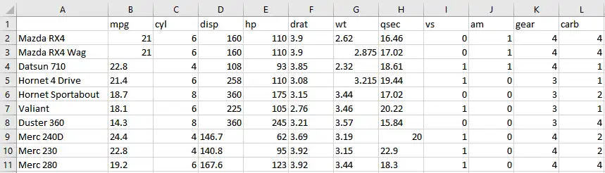
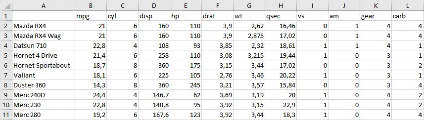
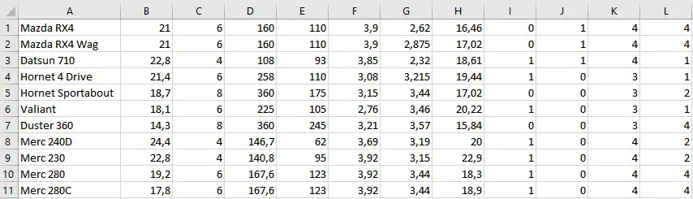
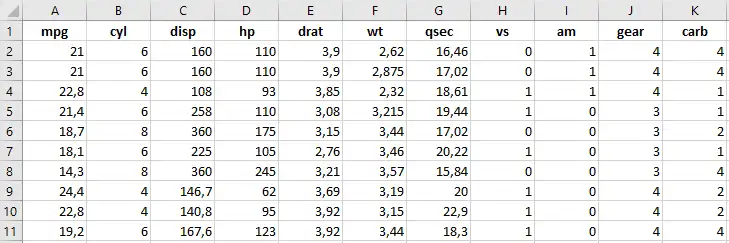
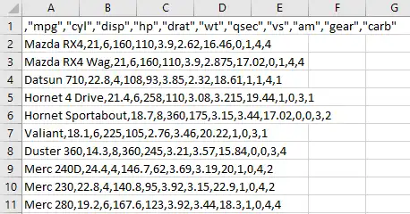

library(clipr)O clipr é um pacote composto por algumas funções que permitem importar/exportar objetos do R através da área de transferência!
Essas funções são muito úteis para, por exemplo, copiar objetos do excel, powerpoint ou word para o R, e vice-versa.
Nesse post, vamos mostrar como copiar tabelas do R para o Excel, e como copiar tabelas do Excel para o R através desse pacote! Sem mais delongas, vamos aos tutoriais:
Copiando tabelas do R para o Excel através da área de transferência
- Carregue o pacote
clipr
- Agora, basta usar a tabela escolhida como argumento da função
write_clip. No nosso caso, queremos copiar a tabelamtcars
write_clip(mtcars)- Abra um novo arquivo excel, use o atalho crtl + v e voilà!

Note que por default, o separador decimal usado é o ponto. Para mudar isso, basta usar o argumento dec = ","
write_clip(mtcars, dec = ",")Usando o atalho ctrl + v no arquivo excel:

Também podemos usar o operador pipe, obtendo o mesmo resultado do passo anterior:
mtcars %>%
write_clip(dec = ",")Além disso, a função também pode receber outros argumentos. Por exemplo, com o argumento col.names = FALSE a tabela será copiada sem os nomes das colunas
mtcars %>%
write_clip(dec = ",", col.names = FALSE)Usando o atalho ctrl + v no arquivo excel:

Copiando tabelas do Excel para o R através da área de transferência
- Carregue o pacote
clipr
library(clipr)- No excel, selecione a tabela desejada, e a copie através do comando ctrl + c. No nosso caso, estamos copiando a base
mtcars(no formato .xlsx)

- Agora, vá até o R e use o seguinte comando:
base_de_dados <- read_clip_tbl()(base_de_dados é apenas um nome genérico que estamos dando para esse data.frame, você pode nomear como preferir)
E prontinho! Vamos visualizar o objeto base_de_dados:
base_de_dados[1:11, ] mpg cyl disp hp drat wt qsec vs am gear carb
1 21.0 6 160.0 110 3.90 2.620 16.46 0 1 4 4
2 21.0 6 160.0 110 3.90 2.875 17.02 0 1 4 4
3 22.8 4 108.0 93 3.85 2.320 18.61 1 1 4 1
4 21.4 6 258.0 110 3.08 3.215 19.44 1 0 3 1
5 18.7 8 360.0 175 3.15 3.440 17.02 0 0 3 2
6 18.1 6 225.0 105 2.76 3.460 20.22 1 0 3 1
7 14.3 8 360.0 245 3.21 3.570 15.84 0 0 3 4
8 24.4 4 146.7 62 3.69 3.190 20.00 1 0 4 2
9 22.8 4 140.8 95 3.92 3.150 22.90 1 0 4 2
10 19.2 6 167.6 123 3.92 3.440 18.30 1 0 4 4
11 17.8 6 167.6 123 3.92 3.440 18.90 1 0 4 4Também podemos usar alguns argumentos na função read_clip_tbl. Por exemplo, considere que temos uma base de dados no formato .csv:

Se quisermos copiar a tabela mtcars no formato .csv do excel para o R, por exemplo, basta usar o argumento sep para especificar o separador usado, que é a vírgula:
base_de_dados2 <- read_clip_tbl(sep = ",")Vamos visualizar o objeto base_de_dados2:
base_de_dados2[1:11, ] X mpg cyl disp hp drat wt qsec vs am gear carb
1 Mazda RX4 21.0 6 160.0 110 3.90 2.620 16.46 0 1 4 4
2 Mazda RX4 Wag 21.0 6 160.0 110 3.90 2.875 17.02 0 1 4 4
3 Datsun 710 22.8 4 108.0 93 3.85 2.320 18.61 1 1 4 1
4 Hornet 4 Drive 21.4 6 258.0 110 3.08 3.215 19.44 1 0 3 1
5 Hornet Sportabout 18.7 8 360.0 175 3.15 3.440 17.02 0 0 3 2
6 Valiant 18.1 6 225.0 105 2.76 3.460 20.22 1 0 3 1
7 Duster 360 14.3 8 360.0 245 3.21 3.570 15.84 0 0 3 4
8 Merc 240D 24.4 4 146.7 62 3.69 3.190 20.00 1 0 4 2
9 Merc 230 22.8 4 140.8 95 3.92 3.150 22.90 1 0 4 2
10 Merc 280 19.2 6 167.6 123 3.92 3.440 18.30 1 0 4 4
11 Merc 280C 17.8 6 167.6 123 3.92 3.440 18.90 1 0 4 4Obs: Para limpar a area de tranferencia, basta usar o comando clear_clip()